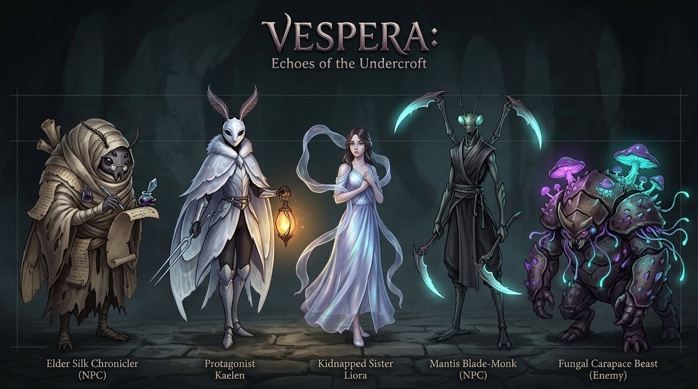

Alternativ 1: Moth-Knight & Silk-Weaver
Insekts- & Silkesfantasi
Känsla & Estetik: Elegant, poetisk insektsfantasy inspirerad av Hollow Knight, Silksong och Studio Ghibli. Karaktärerna bär skira sidentyger, porslinsmasker och fjäderformade antenner.
Huvudpersonen Kaelen
Porslinsmask som en nattfjäril, fjäderantenner, böljande gossamer-mantel, kristallint stämgaffelsvärd och bärnstenslykta.
Systern Liora
Sidenvävare i skira skimrande slöjor med resonant sångkristall.
Invånare (NPC:er)
Silkeskrönikörer, äldre nattfjärilsfolk och bönsyrsemunkar med svärdsklingor.
Väsen & Fiender
Skalbaggar med svampbepansring, svävande sporfjärilar och rovdjursinsekter.